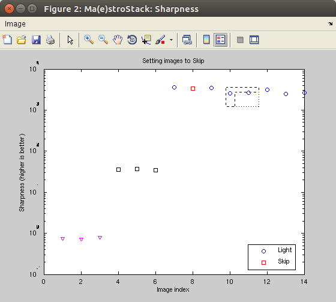

Ma(e)stroStack:
a Matlab class to automatically align and stack astro-photography
images
This class gets a list of images, and automatically determines bright stars as control points. These are followed along pictures, and used to build an affine transformation at constant scale (e.g. a rotation and translation). All images are then stacked. The images can be given as file names (may include wildcards), or matrices from e.g. imread, and support both RGB and gray images. As stars are used for the alignment, this method is suited for deep sky images, but not for planetary imaging.
This function does not make use of the phase correlation technique, but operates directly on the images. It assumes that at least two bright stars remain on each picture, but tolerate translations and rotations, as well as stars/control points that appear/disappear on the field of view. The procedure also ignores very sharp peaks, assuming they originate from dead pixels (and would then be static over images, leading to traces).
It is highly recommended to specify a dark frame filename, which will be subtracted to all images, in order to e.g. remove most hot/dead pixels. To get such a 'dark', use your camera alone and shoot with the cap on, same settings as the other pictures (duration, ISO). Image should be full black.
You may as well specify a flat frame filename, which will be divided to all images, in order to counter vignetting (darker borders). To get such a 'flat', shot once with the scope pointing at a uniform view (sky, white wall). Adapt the duration so that you get a rather gray image (not full black or white).
ma = mastrostack;
start the user interface
ma = mastrostack(images)
loads
images without setting their type and start the interface
ma = mastrostack(light, dark)
ma = mastrostack(light, dark, flat)
loads light, dark (background) and flat (scope response) images, label them, and start the interface
Start with:
ma=mastrostack;
Then press the Return key on the main interface. A Drop Files Here button appears in the lower left side. Drag and drop your Dark, Flat and Light images there. Images having 'dark' or 'flat' in their path/file name are marked as such automatically. You may alternatively use the File menu items.
Supported
image formats include JPG, PNG, TIFF, FITS. If you have installed readraw,
you may as well directly import RAW camera images. This is highly
recommended, as it retains much more information from the camera
than the generated JPEG images, which proves to be essential for
subtracting the Dark image (background), and revealing faint
objects.
You
may as well import images using the command:
ma.load('images');
Alternatively,
you may use DCRAW on each RAW image with command
dcraw -T -4 -t 0 <file.RAW>
To do things quickly, you can just select the Compute/Stack menu item. This will set the Reference frame, compute the master Dark and Flat frames, align and stack images. Then go to the Stacking section below (you may skip the next section).
The
following steps are all optional.
After importing the files, you should label them using the 'Image/Mark as...' menu items. You can navigate within images with the Image/Goto menu item, and the arrow keys, or the mouse wheel. 'Bad' images can be skipped (ignored). To use them back, set their type to 'light'. You should then compute the master Dark and Flat images (Compute menu).
It is recommended to zoom onto specific features (e.g. a set of stars) to check visually for their sharpness. Deselect the Zoom tool, and scan through images using the left arrow key, and press the 'I' key to mark images to be ignored, such as those blurred. To reset the plot, press the Return key.
You
can select the Reference image, which will be used as template for
stacking. If not defined, the first image in the list will be used
as such when stacking.
Optionally, use the Compute/Align item to compute the images control points (stars) which also corrects for background and scope response when dark and flat are defined. This procedure computes a metric to quantify the sharpness.
When
ready, use the Compute/Stack menu item. If the Alignment has not
been executed previously, it is achieved for each image. The final
image is then shown and written to disk. Use e.g. Lightroom,
RawTherapee, DarkTable to enhance contrast.
After
the first Align or Stack procedure, the sharpness has been
computed for all images. It is then possible to plot it in order
to identify images of lower quality.
You
may then select the 'Compute/Select on sharpness' menu item which
metric is highest for clearer images, and low for blurred/moved
ones. The axis is the image index. 
You can use the following actions on that plot window. The mouse buttons define a rectangle selection.
If you have difficulties in stacking (some images do not have enough control points), relax e.g. the translation tolerance, using the menu item 'Compute/Set tolerances'. You can also increase the number of control points. In case the main interface is closed, get it back with
plot(ma)
save my_session
Using commands allow to script/automate the procedure.
% create Ma(e)stroStack and import images
ma=mastrostack('path/to/images/*.JPG','path/to/darks/*.JPG','path/to/flats/*.JPG');
% load more images
load(ma,'*.JPG');
% stack. The first 'light' image will be used as Reference for stacking
stack(ma);
You only need Matlab, no external toolbox.
Copy the directory and navigate to it. Then type from the Matlab prompt:
addpath(pwd)
If you also have readraw installed and available, you will be able to import RAW camera images.
See also:
(c) E. Farhi, 2018. GPL2.